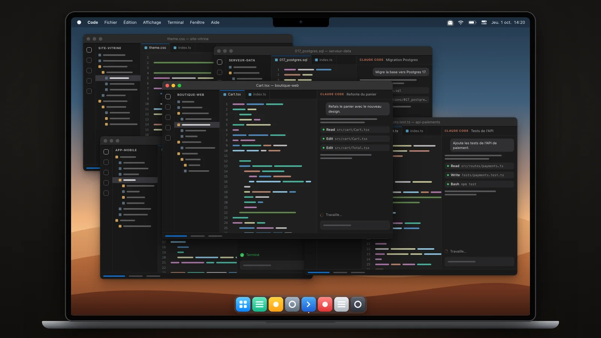
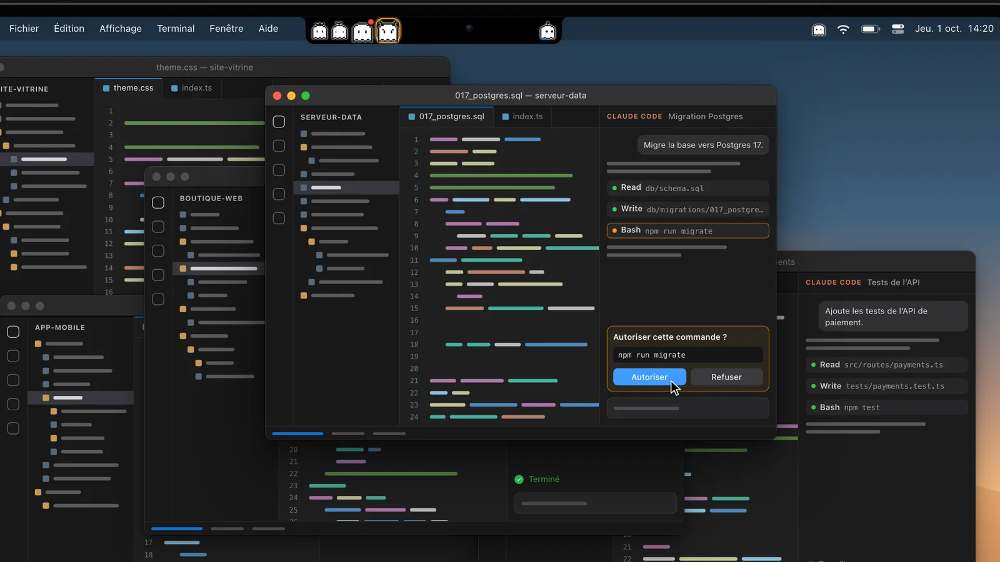
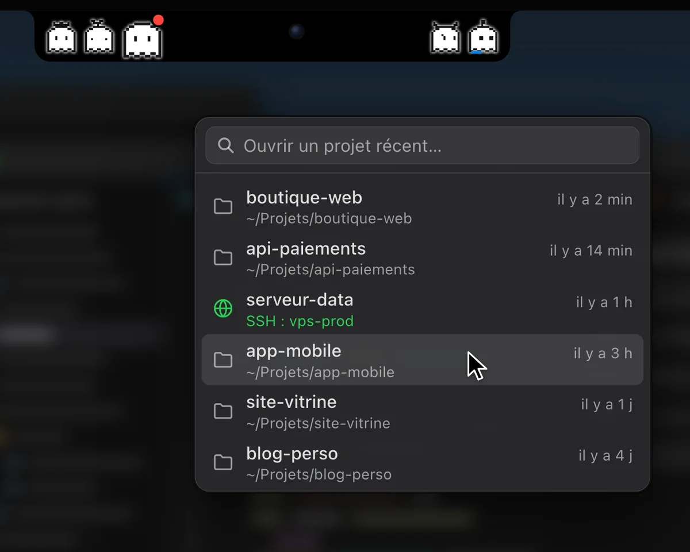
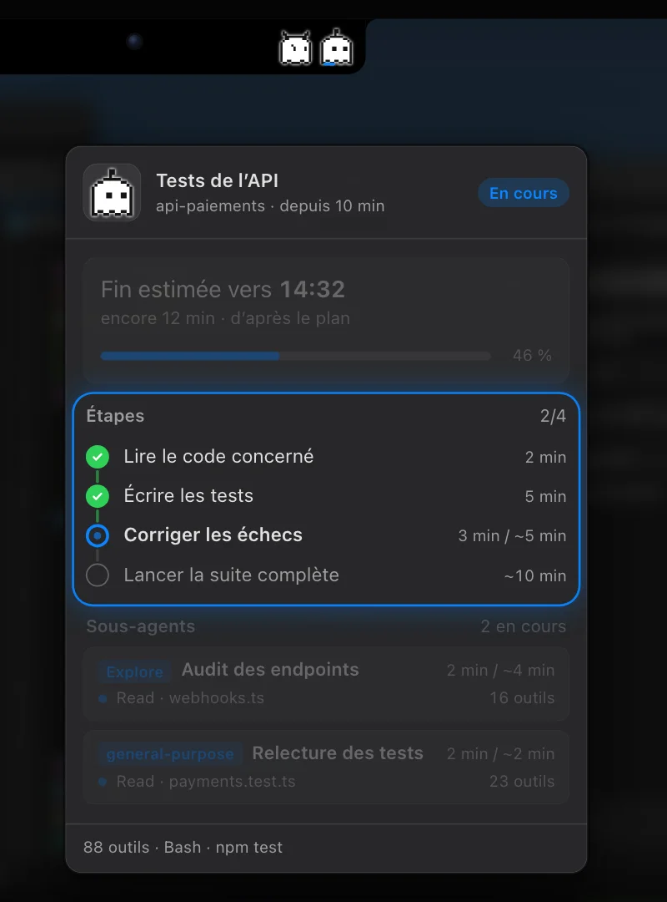
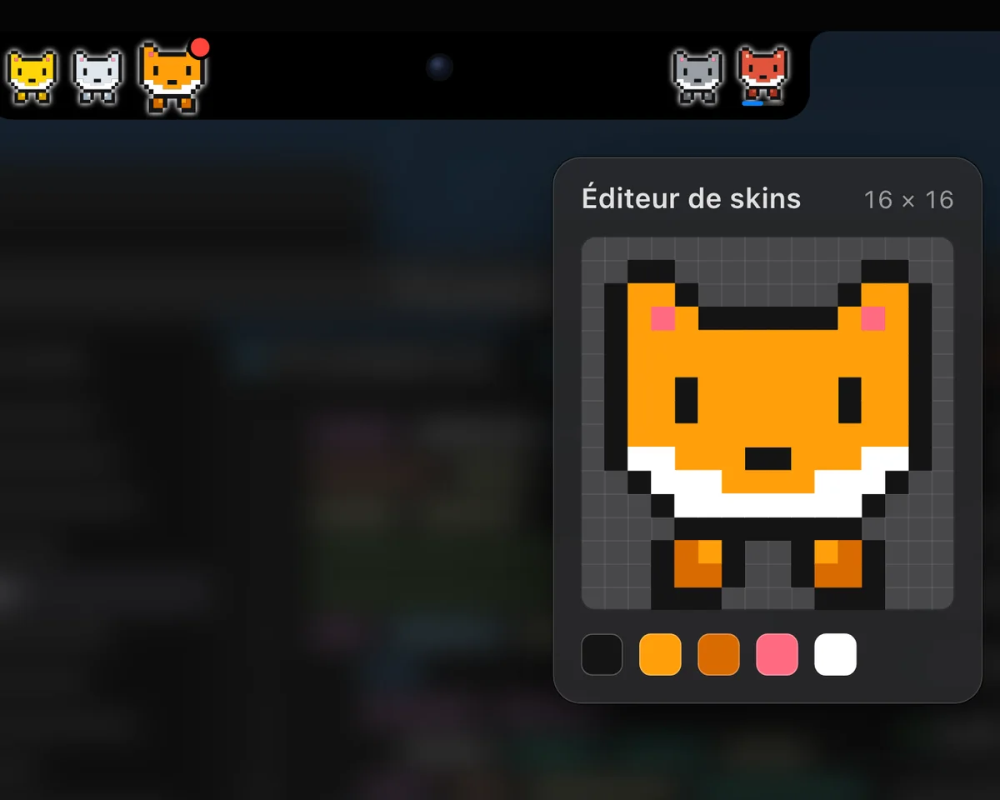
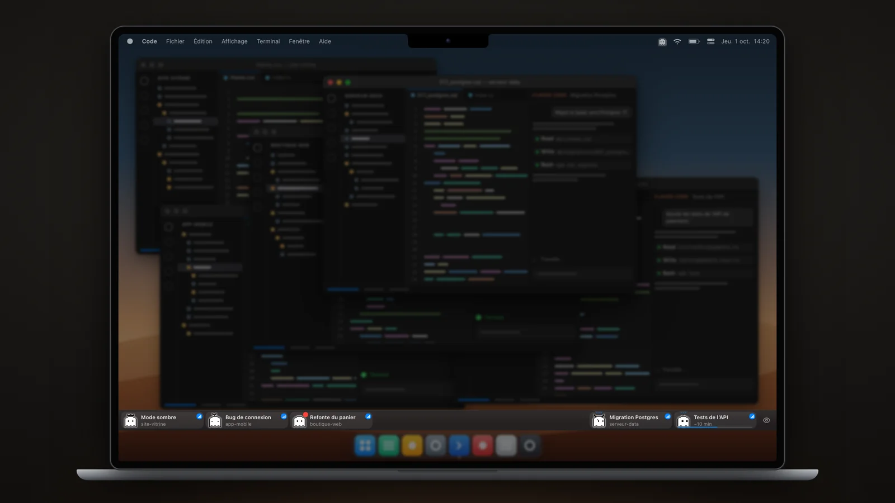
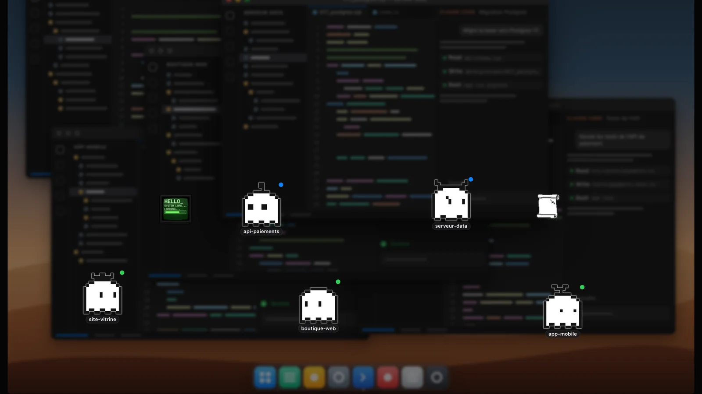
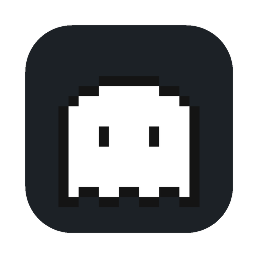

C’est fini ? Sa carte descend de l’encoche.
Quand Claude termine, la bulle passe à gauche, grossit, et sa carte descend quelques secondes : la discussion, son projet, « Terminé ». Une pastille rouge reste tant que tu n’es pas allé voir.
VSCodeWorkers donne un petit personnage à chacune de tes discussions Claude Code et les range autour de l’encoche de ton Mac. D’un coup d’œil, tu sais laquelle a fini, et laquelle t’attend.
Gratuit · Version 1.1.0 · macOS et Windows
Chaque discussion vit dans sa fenêtre VS Code. Dès que tu en lances plusieurs, tu passes ton temps à faire le tour des fenêtres pour savoir où elles en sont.

VSCodeWorkers fait de l’encoche de ton Mac une petite île noire. À gauche de la caméra, les discussions qui ont fini ou qui t’attendent. À droite, celles où Claude travaille encore, avec un trait bleu qui avance au rythme de son plan.
Survole une bulle, ou la caméraTouche une bulle, ou la caméra
Quand Claude termine, la bulle passe à gauche, grossit, et sa carte descend quelques secondes : la discussion, son projet, « Terminé ». Une pastille rouge reste tant que tu n’es pas allé voir.
Une commande à autoriser, une question à trancher : la bulle se cercle d’orange et bat doucement jusqu’à ta réponse. Sa carte dit « Attend ta confirmation ».
Clique une bulle : la fenêtre VS Code de cette discussion passe au premier plan, là où Claude t’attend. Un deuxième clic la réduit. Un clic droit retire la bulle.

D’un survol, le compte : combien attendent ta confirmation, combien travaillent, combien ont fini. Juste à côté, deux boutons : tes projets récents, dossiers locaux ou serveurs en SSH, et une nouvelle fenêtre VS Code.

Le bouton bleu d’une carte ouvre le panneau de progression de la discussion.
Pour ça, l’app ajoute un petit skill à Claude Code : Claude annonce son plan et ses estimations, l’app suit le reste.

Décoche « Toujours afficher les bulles » dans les options : l’encoche redevient une encoche. Seules les discussions qui ont besoin de toi en sortent ; les autres reviennent dès que la souris passe dessus.
Survole pour faire revenir les autresTouche pour faire revenir les autres
Chaque discussion a son personnage. Choisis une série : les encoches de la page changent avec.
L’app a son éditeur, 16 × 16 pixels. Chaque pixel posé change le personnage en direct, jusque dans l’encoche.


Sous Windows, ou sur Mac si tu préfères : un onglet par discussion, en bas, en haut, à gauche ou à droite de l’écran. Et sur un Mac sans encoche, l’île se pose au milieu de la barre des menus.

Un personnage par fenêtre VS Code, qui se balade sur ton écran. Tes clics passent à travers, et tu peux lui tracer un périmètre.
Au lancement, l’app ajoute ses hooks à ton ~/.claude/settings.json. À chaque événement, Claude Code la prévient, et la bonne bulle se met à jour.
Chaque hook parle à l’app sur 127.0.0.1:3847, une adresse qui n’existe que sur ton ordinateur.
L’app n’ajoute et ne retire que les siens, et garde une copie de ton fichier avant sa première modification.
Les hooks tournent en arrière-plan : Claude ne les attend pas et ne les voit pas échouer, que l’app soit lancée ou non.
Lance l’app une fois avec --uninstall-hooks : elle enlève ses hooks et se ferme.

Gratuit · Version 1.1.0
Il te faut VS Code et Claude Code.
Sur Mac, ouvre le fichier .dmg et glisse VSCodeWorkers dans Applications. Sous Windows, lance l’installateur.
Elle installe ses hooks toute seule. Sur Mac, autorise l’Accessibilité quand elle le demande : c’est ce qui lui permet de retrouver tes fenêtres VS Code.
Sa bulle apparaît. Celles qui étaient déjà ouvertes la rejoignent une fois redémarrées.
L’app n’est pas encore notarisée par Apple : macOS la bloque au premier lancement. Ouvre Réglages Système, puis Confidentialité et sécurité, et clique « Ouvrir quand même ». Sur un macOS plus ancien : clic droit sur l’app, puis Ouvrir.
Si macOS la dit « endommagée », lance dans le Terminal : xattr -cr /Applications/VSCodeWorkers.app
L’installateur n’est pas encore signé : Windows affiche « Windows a protégé votre ordinateur ». Clique « Informations complémentaires », puis « Exécuter quand même ».